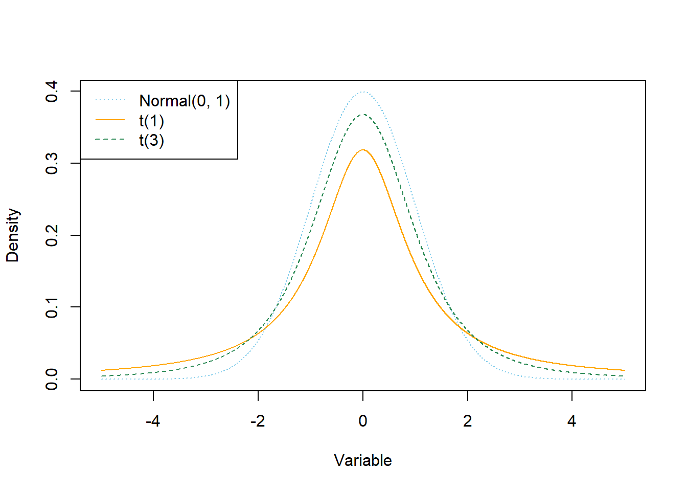
18 Bayesian Analyis of a Numerical Variable
- When the distribution of the measured variable is symmetric and unimodal, the population mean \(\mu\) is often the main parameter of interest. However, the population SD \(\sigma\) also plays an important role.
- We have previously assumed that the measured numerical variable follows a conditional Normal(\(\mu\), \(\sigma\)) distribution. That is, we assumed a Normal likelihood function.
- However, the assumption of Normality is not always justified, even when the distribution of the measured variable is symmetric and unimodal.
Example 18.1 Assume that birthweights (grams) of human babies follow a Normal distribution with unknown mean \(\mu\) and unknown standard deviation \(\sigma\). (1 pound \(\approx\) 454 grams.)
Considering \(\mu\) in isolation, what seems like a reasonable prior distribution for \(\mu\)?
What does the parameter \(\sigma\) represent? What is a reasonable prior distribution for \(\sigma\)?
Assume a Normal(3400, 100) prior distribution for \(\mu\), a Normal(600, 200) prior distribution for \(\sigma\), and that \(\mu\) and \(\sigma\) are independent. Explain how you could use simulation to approximate the prior predictive distribution of birthweights. Run the simulation and summarize the results. Does the choice of prior seem reasonable?
Example 18.2 Section 18.1.2 summarizes data on a random sample1 of 1000 live births in the U.S. in 2001.
Inspect the sample data; does it seem reasonable to assume birthweights follow a Normal distribution?
Regardless of your answer to the previous question, continue to assume the conditional Normal(\(\mu\), \(\sigma\)) model for birthweights, with prior distributions as in the previous example. Use
brmsto find the posterior distribution. Briefly describe the posterior distribution.
How could you use simulation to approximate the posterior predictive distribution of birthweights? Run the simulation and find a 99% posterior prediction interval.
What percent of values in the observed sample fall outside the prediction interval? What does that tell you?
Run a posterior predictive check. Does it indicate any problems?
- If the observed data is relatively unimodal and symmetric but has more extreme values than can be accommodated by a Normal likelihood, a \(t\)-distribution or other distribution with heavy tails can be used to model the likelihood.
- For “Student” t-distributions, the degrees of freedom parameter \(\nu \ge 1\) controls how heavy the tails are.
- When \(\nu\) is small, the tails are much heavier than for a Normal distribution, leading to a higher frequency of extreme values.
- As \(\nu\) increases, the tails get lighter and a \(t\)-distribution gets closer to a Normal distribution.
- For \(\nu\) greater than 30 or so, there is very little different between a \(t\)-distribution and a Normal distribution except in the extreme tails.
- The degrees of freedom parameter \(\nu\) is sometimes referred to as the “Normality parameter”, with larger values of \(\nu\) indicating a population distribution that is closer to Normal.
Example 18.3 Continuing the birthweight example, we’ll now model the distribution of birthweights with a conditional \(t(\mu, \sigma, \nu)\) distribution.
How many parameters is the likelihood function based on? What are they?
What does assigning a prior distribution to the Normality parameter \(\nu\) represent?
Software packages like
brmswill choose a prior for you if you don’t specify one. (Basically, the software will run some prior predictive tuning to find a choice of prior that results in a reasonable scale for the response variable.) Changefamilyfromgaussiantostudentand fit the model withbrm. Runprior_summary(); what prior distribution didbrmsassume fornu?
Consider the posterior distribution for \(\nu\). Based on this posterior distribution, is it plausible that birthweights follow a Normal distribution?
Consider the posterior distribution for \(\sigma\). What seems strange about this distribution? (Hint: consider the sample SD.)
Using the
brmsoutput, create a plot of the posterior distribution of \(\sigma\sqrt{\frac{\nu}{\nu-2}}\). Does this posterior distribution of the population standard deviation seem more reasonable in light of the sample data?
- The standard deviation of a Normal(\(\mu\), \(\sigma\)) distribution is \(\sigma\).
- However, the standard deviation of a \(t(\mu, \sigma, \nu)\) distribution is not \(\sigma\); rather it is \(\sigma\sqrt{\frac{\nu}{\nu-2}}>\sigma\) (as long as \(\nu>2\); if \(\nu\le 2\) then the SD is infinite/undefined).
- When \(\nu\) is large, \(\sqrt{\frac{\nu}{\nu-2}}\approx 1\), and so the standard deviation is approximately \(\sigma\). However, it can make a difference when \(\nu\) is small.
Example 18.4 Continuing the previous example.
How could you use simulation to approximate the posterior predictive distribution of birthweights? Run the simulation and find a 99% posterior prediction interval. How does it compare to the predictive interval from the model with the Normal likelihood?
Run a posterior predictive check. Which model seems to fit the data better: the one based on the Normal likelihood or the \(t\) likelihood?
- While we do want a model that fits the data well, we also do not want to risk overfitting the data.
- In particular, we do not want a few extreme outliers to unduly influence the model.
- However, likelihood models based on distributions, like \(t\), with heavier tails than Normal often provide more flexible and robust models.
- Moreover, accommodating the tails often improves the fit in the center of the distribution too.
- In models with multiple parameters, there can be dependencies between parameters, so interpreting the marginal posterior distribution of any single parameter can be difficult.
- It is often more helpful to consider predictive distributions, which accounts for the joint distribution of all parameters.
- Interpreting predictive distributions is often more intuitive since predictive distributions live on the scale of the measured variable.
18.1 Notes
18.1.1 Prior predictive distribution (Normal likelihood)
n_rep = 10000
mu_sim = rnorm(n_rep, 3400, sd = 100)
sigma_sim = pmax(0.001, rnorm(n_rep, 600, 200))
y_sim = rnorm(n_rep, mu_sim, sigma_sim)
ggplot(data.frame(y_sim),
aes(x = y_sim)) +
geom_histogram(aes(y = after_stat(density)),
col = bayes_col["prior_predict"],
fill = "white") +
geom_density(col = bayes_col["prior_predict"],
linewidth = 1) +
labs(x = "Birthweight (y, grams)") +
theme_bw()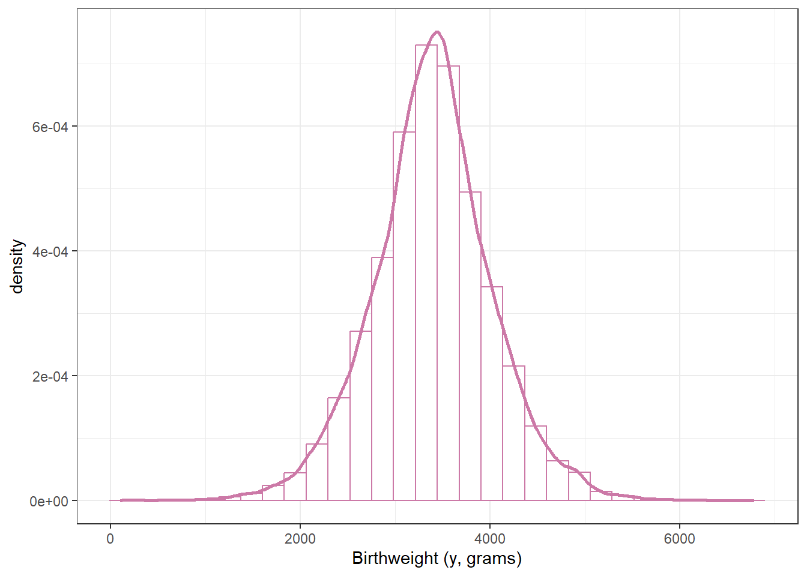
18.1.2 Sample data
data = read_csv("birthweight.csv")Rows: 1000 Columns: 1
── Column specification ────────────────────────────────────────────────────────
Delimiter: ","
dbl (1): birthweight
ℹ Use `spec()` to retrieve the full column specification for this data.
ℹ Specify the column types or set `show_col_types = FALSE` to quiet this message.head(data)# A tibble: 6 × 1
birthweight
<dbl>
1 3033
2 3147
3 3175
4 3005
5 2863
6 2665summary(data$birthweight) Min. 1st Qu. Median Mean 3rd Qu. Max.
595 3005 3350 3315 3714 5500 sd(data$birthweight)[1] 631.3303ggplot(data,
aes(x = birthweight)) +
geom_histogram(aes(y = after_stat(density)),
bins = 50,
col = "black", fill = "white") +
geom_density(linewidth = 1) +
theme_bw()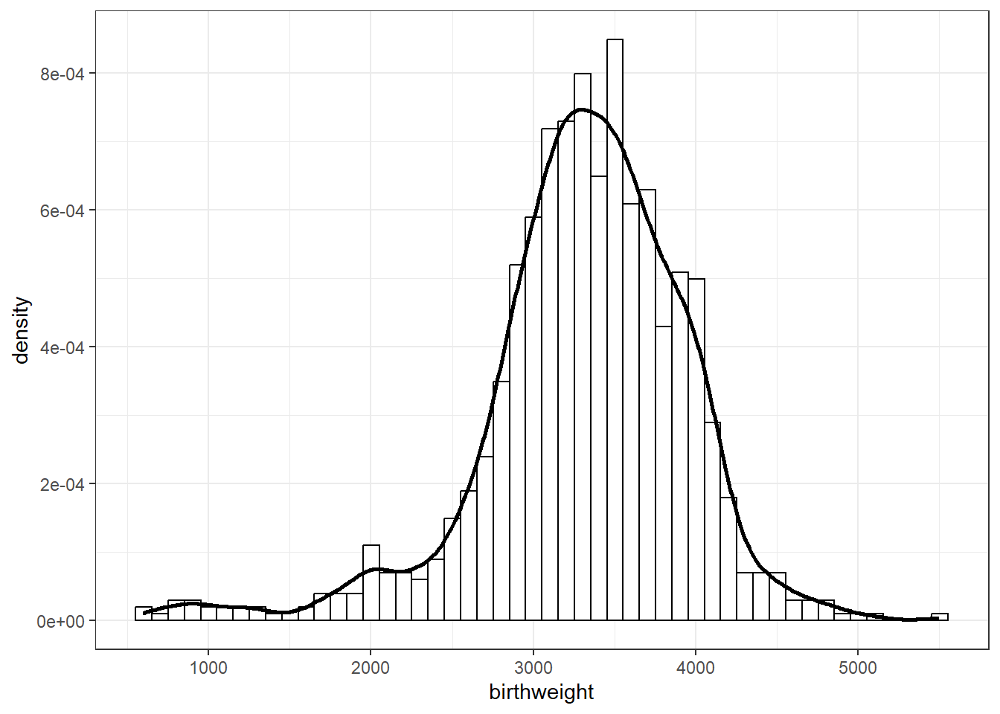
18.1.3 Posterior distribution (Normal likelihood)
library(brms)Loading required package: RcppLoading 'brms' package (version 2.23.0). Useful instructions
can be found by typing help('brms'). A more detailed introduction
to the package is available through vignette('brms_overview').
Attaching package: 'brms'The following object is masked from 'package:stats':
arlibrary(tidybayes)
Attaching package: 'tidybayes'The following objects are masked from 'package:brms':
dstudent_t, pstudent_t, qstudent_t, rstudent_tlibrary(bayesplot)This is bayesplot version 1.14.0- Online documentation and vignettes at mc-stan.org/bayesplot- bayesplot theme set to bayesplot::theme_default() * Does _not_ affect other ggplot2 plots * See ?bayesplot_theme_set for details on theme setting
Attaching package: 'bayesplot'The following object is masked from 'package:brms':
rhatfit <- brm(data = data,
family = gaussian,
birthweight ~ 1,
prior = c(prior(normal(3400, 100), class = Intercept),
prior(normal(600, 200), class = sigma)),
iter = 3500,
warmup = 1000,
chains = 4,
refresh = 0)Compiling Stan program...Start samplingsummary(fit) Family: gaussian
Links: mu = identity
Formula: birthweight ~ 1
Data: data (Number of observations: 1000)
Draws: 4 chains, each with iter = 3500; warmup = 1000; thin = 1;
total post-warmup draws = 10000
Regression Coefficients:
Estimate Est.Error l-95% CI u-95% CI Rhat Bulk_ESS Tail_ESS
Intercept 3318.35 19.58 3280.84 3356.84 1.00 8676 7120
Further Distributional Parameters:
Estimate Est.Error l-95% CI u-95% CI Rhat Bulk_ESS Tail_ESS
sigma 632.02 14.12 604.74 660.52 1.00 8646 6794
Draws were sampled using sampling(NUTS). For each parameter, Bulk_ESS
and Tail_ESS are effective sample size measures, and Rhat is the potential
scale reduction factor on split chains (at convergence, Rhat = 1).plot(fit)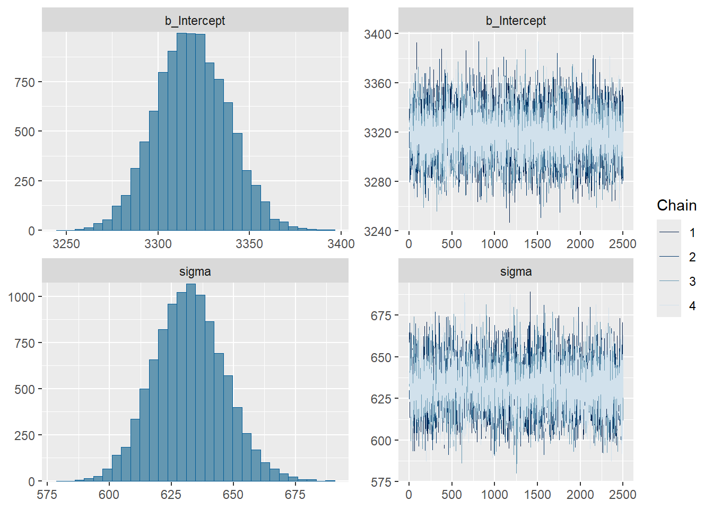
pairs(fit,
off_diag_args = list(alpha = 0.1))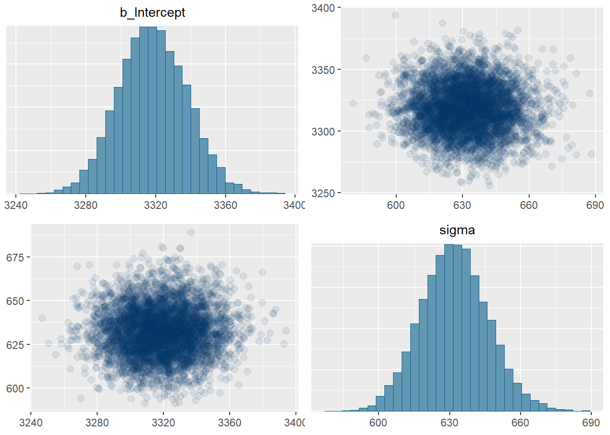
posterior = fit |>
spread_draws(b_Intercept, sigma) |>
rename(mu = b_Intercept)
posterior |> head(10) |> kbl() |> kable_styling()| .chain | .iteration | .draw | mu | sigma |
|---|---|---|---|---|
| 1 | 1 | 1 | 3328.840 | 664.5711 |
| 1 | 2 | 2 | 3349.764 | 652.9714 |
| 1 | 3 | 3 | 3352.722 | 657.4792 |
| 1 | 4 | 4 | 3284.833 | 659.3546 |
| 1 | 5 | 5 | 3325.805 | 645.9530 |
| 1 | 6 | 6 | 3315.574 | 613.5895 |
| 1 | 7 | 7 | 3354.471 | 621.3152 |
| 1 | 8 | 8 | 3312.937 | 654.0913 |
| 1 | 9 | 9 | 3310.302 | 634.6238 |
| 1 | 10 | 10 | 3317.561 | 631.4318 |
18.1.4 Posterior predictive distribution (Normal likelihood)
n_rep = nrow(posterior)
posterior <- posterior |>
mutate(y_sim = rnorm(n_rep,
mean = posterior$mu,
sd = posterior$sigma))
posterior |> head(10) |> kbl() |> kable_styling()| .chain | .iteration | .draw | mu | sigma | y_sim |
|---|---|---|---|---|---|
| 1 | 1 | 1 | 3328.840 | 664.5711 | 3315.678 |
| 1 | 2 | 2 | 3349.764 | 652.9714 | 2932.229 |
| 1 | 3 | 3 | 3352.722 | 657.4792 | 3919.526 |
| 1 | 4 | 4 | 3284.833 | 659.3546 | 2395.149 |
| 1 | 5 | 5 | 3325.805 | 645.9530 | 3412.514 |
| 1 | 6 | 6 | 3315.574 | 613.5895 | 3390.155 |
| 1 | 7 | 7 | 3354.471 | 621.3152 | 3159.211 |
| 1 | 8 | 8 | 3312.937 | 654.0913 | 2666.111 |
| 1 | 9 | 9 | 3310.302 | 634.6238 | 3061.508 |
| 1 | 10 | 10 | 3317.561 | 631.4318 | 3688.574 |
ggplot(posterior,
aes(x = y_sim)) +
geom_histogram(aes(y = after_stat(density)),
col = bayes_col["posterior_predict"], fill = "white", bins = 100) +
geom_density(linewidth = 1, col = bayes_col["posterior_predict"]) +
labs(x = "Predicted birthweight (grams)") +
theme_bw()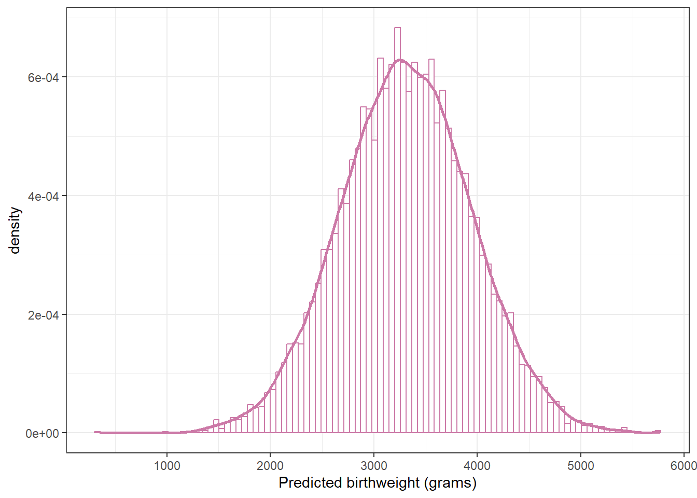
# plot the cdf
ggplot(posterior,
aes(x = y_sim)) +
stat_ecdf(col = bayes_col["prior_predict"],
linewidth = 1) +
labs(x = "Birthweight (grams)",
y = "cdf") +
theme_bw()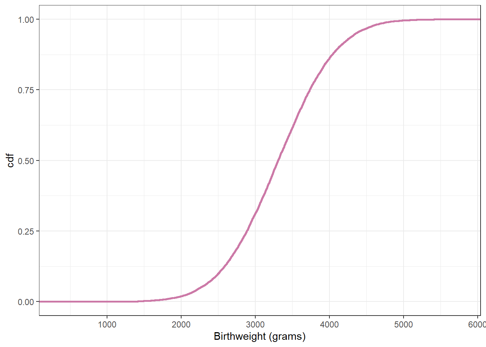
quantile(posterior$y_sim, c(0.005, 0.995)) 0.5% 99.5%
1650.844 4955.230 sum(data$birthweight < quantile(posterior$y_sim, 0.005)) / length(data$birthweight)[1] 0.02sum(data$birthweight > quantile(posterior$y_sim, 0.995)) / length(data$birthweight)[1] 0.00318.1.5 Posterior predictive checking (Normal likelihood)
pp_check(fit, ndraw = 100)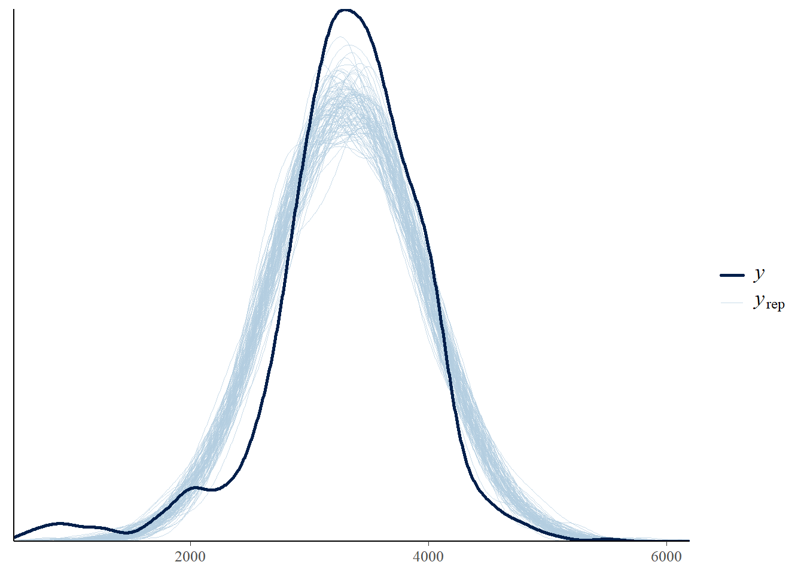
pp_check(fit, ndraw = 100, type = "ecdf_overlay")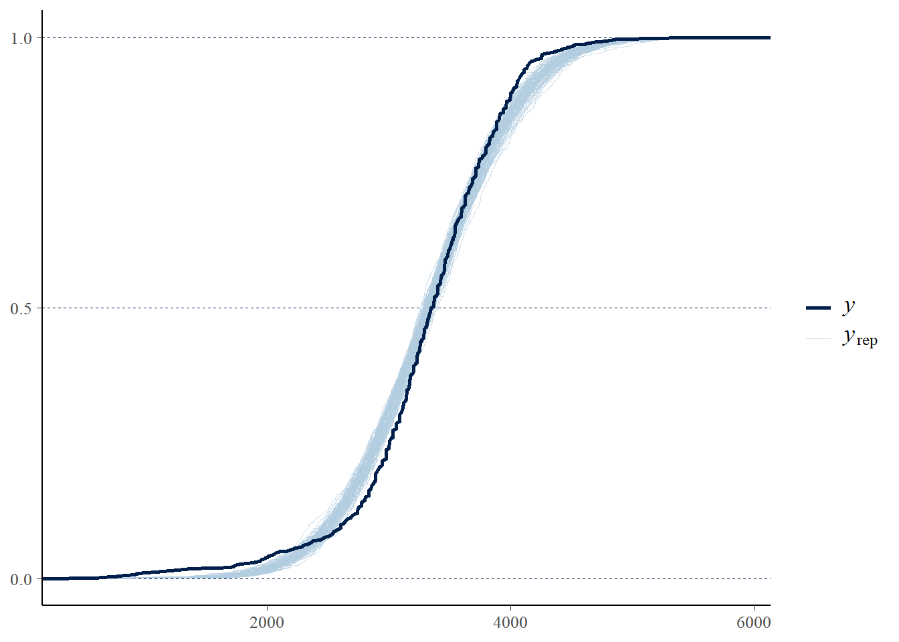
18.1.6 Posterior distribution (\(t\) likelihood)
fit <- brm(data = data,
family = student,
birthweight ~ 1,
prior = c(prior(normal(3400, 100), class = Intercept),
prior(normal(600, 200), class = sigma)),
iter = 3500,
warmup = 1000,
chains = 4,
refresh = 0)Compiling Stan program...Start samplingprior_summary(fit) prior class coef group resp dpar nlpar lb ub source tag
normal(3400, 100) Intercept user
gamma(2, 0.1) nu 1 default
normal(600, 200) sigma 0 user summary(fit) Family: student
Links: mu = identity
Formula: birthweight ~ 1
Data: data (Number of observations: 1000)
Draws: 4 chains, each with iter = 3500; warmup = 1000; thin = 1;
total post-warmup draws = 10000
Regression Coefficients:
Estimate Est.Error l-95% CI u-95% CI Rhat Bulk_ESS Tail_ESS
Intercept 3363.12 17.25 3328.99 3396.70 1.00 6746 5891
Further Distributional Parameters:
Estimate Est.Error l-95% CI u-95% CI Rhat Bulk_ESS Tail_ESS
sigma 468.82 18.36 433.30 504.96 1.00 5874 6042
nu 4.38 0.62 3.35 5.76 1.00 5959 6595
Draws were sampled using sampling(NUTS). For each parameter, Bulk_ESS
and Tail_ESS are effective sample size measures, and Rhat is the potential
scale reduction factor on split chains (at convergence, Rhat = 1).plot(fit)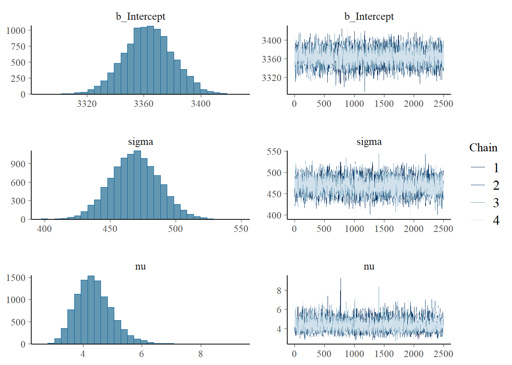
pairs(fit,
off_diag_args = list(alpha = 0.1))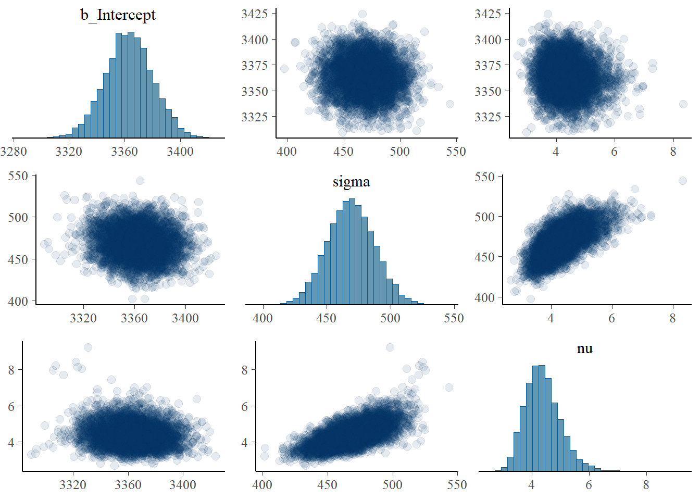
posterior = fit |>
spread_draws(b_Intercept, sigma, nu) |>
rename(mu = b_Intercept) |>
mutate(sd = sigma * sqrt(nu / (nu - 2)))
posterior |> head(10) |> kbl() |> kable_styling()| .chain | .iteration | .draw | mu | sigma | nu | sd |
|---|---|---|---|---|---|---|
| 1 | 1 | 1 | 3342.971 | 479.0871 | 4.288737 | 655.8148 |
| 1 | 2 | 2 | 3342.547 | 455.6609 | 4.325902 | 621.4188 |
| 1 | 3 | 3 | 3379.871 | 486.4239 | 4.604530 | 646.7597 |
| 1 | 4 | 4 | 3358.972 | 457.4084 | 4.224186 | 630.3621 |
| 1 | 5 | 5 | 3364.930 | 471.2112 | 3.824577 | 682.2228 |
| 1 | 6 | 6 | 3365.897 | 454.1934 | 3.628184 | 678.0064 |
| 1 | 7 | 7 | 3359.967 | 490.6955 | 4.884161 | 638.5536 |
| 1 | 8 | 8 | 3375.590 | 462.9417 | 4.380166 | 628.0120 |
| 1 | 9 | 9 | 3359.703 | 447.5173 | 3.919852 | 639.4562 |
| 1 | 10 | 10 | 3351.785 | 473.9757 | 4.294552 | 648.4344 |
posterior |>
ggplot(aes(x = sd)) +
geom_histogram(aes(y = after_stat(density)),
col = bayes_col["posterior"], fill = "white") +
geom_density(linewidth = 1, col = bayes_col["posterior"]) +
theme_bw()`stat_bin()` using `bins = 30`. Pick better value `binwidth`.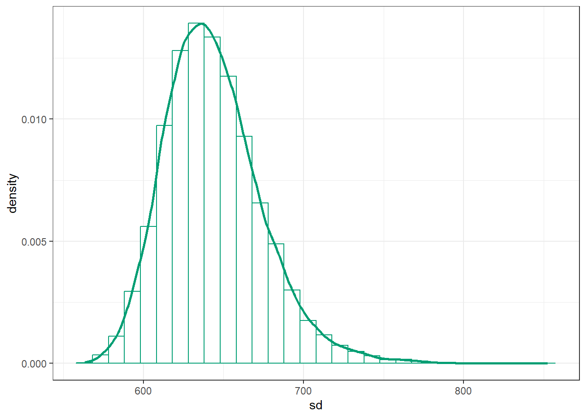
18.1.7 Posterior predictive distribution (\(t\) likelihood)
n_rep = nrow(posterior)
posterior <- posterior |>
mutate(y_sim = mu + sigma * rt(n_rep, nu))
posterior |> head(10) |> kbl() |> kable_styling()| .chain | .iteration | .draw | mu | sigma | nu | sd | y_sim |
|---|---|---|---|---|---|---|---|
| 1 | 1 | 1 | 3342.971 | 479.0871 | 4.288737 | 655.8148 | 3183.668 |
| 1 | 2 | 2 | 3342.547 | 455.6609 | 4.325902 | 621.4188 | 3713.447 |
| 1 | 3 | 3 | 3379.871 | 486.4239 | 4.604530 | 646.7597 | 4045.618 |
| 1 | 4 | 4 | 3358.972 | 457.4084 | 4.224186 | 630.3621 | 3199.712 |
| 1 | 5 | 5 | 3364.930 | 471.2112 | 3.824577 | 682.2228 | 3110.418 |
| 1 | 6 | 6 | 3365.897 | 454.1934 | 3.628184 | 678.0064 | 4229.241 |
| 1 | 7 | 7 | 3359.967 | 490.6955 | 4.884161 | 638.5536 | 3816.066 |
| 1 | 8 | 8 | 3375.590 | 462.9417 | 4.380166 | 628.0120 | 3316.929 |
| 1 | 9 | 9 | 3359.703 | 447.5173 | 3.919852 | 639.4562 | 3296.887 |
| 1 | 10 | 10 | 3351.785 | 473.9757 | 4.294552 | 648.4344 | 2803.939 |
ggplot(posterior,
aes(x = y_sim)) +
geom_histogram(aes(y = after_stat(density)),
col = bayes_col["posterior_predict"], fill = "white", bins = 100) +
geom_density(linewidth = 1, col = bayes_col["posterior_predict"]) +
labs(x = "Predicted birthweight (grams)") +
theme_bw()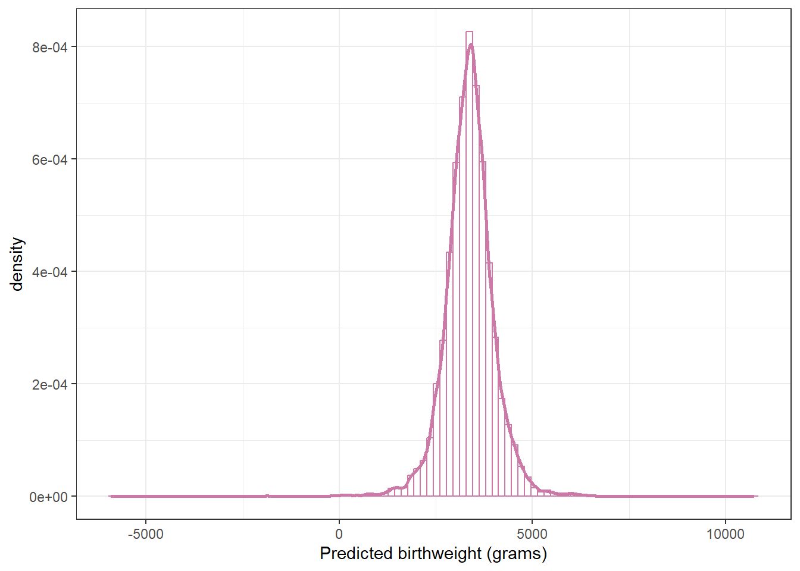
# plot the cdf
ggplot(posterior,
aes(x = y_sim)) +
stat_ecdf(col = bayes_col["prior_predict"],
linewidth = 1) +
labs(x = "Birthweight (grams)",
y = "cdf") +
theme_bw()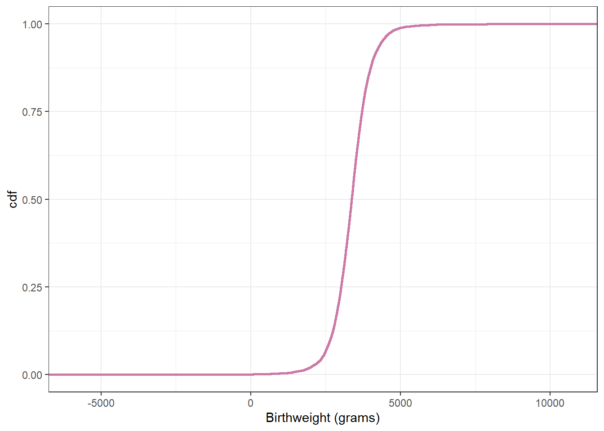
quantile(posterior$y_sim, c(0.005, 0.995)) 0.5% 99.5%
1250.653 5523.626 sum(data$birthweight < quantile(posterior$y_sim, 0.005)) / length(data$birthweight)[1] 0.015sum(data$birthweight > quantile(posterior$y_sim, 0.995)) / length(data$birthweight)[1] 018.1.8 Posterior predictive checking (\(t\) likelihood)
pp_check(fit, ndraw = 100) +
scale_x_continuous(limits = c(0, 8000))Warning: Removed 108 rows containing non-finite outside the scale range
(`stat_density()`).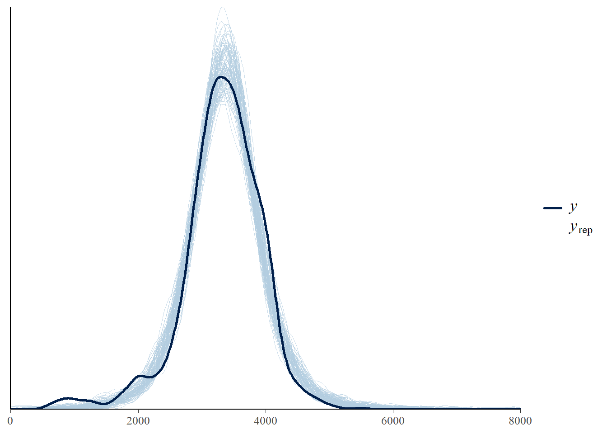
pp_check(fit, ndraw = 100, type = "ecdf_overlay") +
scale_x_continuous(limits = c(0, 8000))Warning: Removed 94 rows containing non-finite outside the scale range
(`stat_ecdf()`).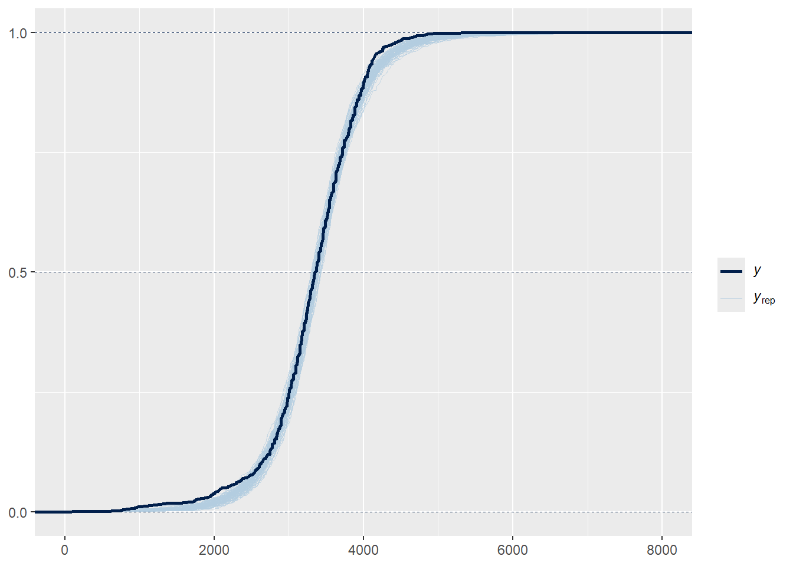
18.1.9 Default brms priors (\(t\) likelihood)
fit <- brm(data = data,
family = student,
birthweight ~ 1,
iter = 3500,
warmup = 1000,
chains = 4,
refresh = 0)Compiling Stan program...Start samplingprior_summary(fit) prior class coef group resp dpar nlpar lb ub source
student_t(3, 3350.5, 518.9) Intercept default
gamma(2, 0.1) nu 1 default
student_t(3, 0, 518.9) sigma 0 default
tag
summary(fit) Family: student
Links: mu = identity
Formula: birthweight ~ 1
Data: data (Number of observations: 1000)
Draws: 4 chains, each with iter = 3500; warmup = 1000; thin = 1;
total post-warmup draws = 10000
Regression Coefficients:
Estimate Est.Error l-95% CI u-95% CI Rhat Bulk_ESS Tail_ESS
Intercept 3362.63 17.35 3328.77 3396.58 1.00 6751 6212
Further Distributional Parameters:
Estimate Est.Error l-95% CI u-95% CI Rhat Bulk_ESS Tail_ESS
sigma 467.30 18.06 433.01 502.86 1.00 5785 6472
nu 4.35 0.60 3.35 5.74 1.00 5531 5559
Draws were sampled using sampling(NUTS). For each parameter, Bulk_ESS
and Tail_ESS are effective sample size measures, and Rhat is the potential
scale reduction factor on split chains (at convergence, Rhat = 1).plot(fit)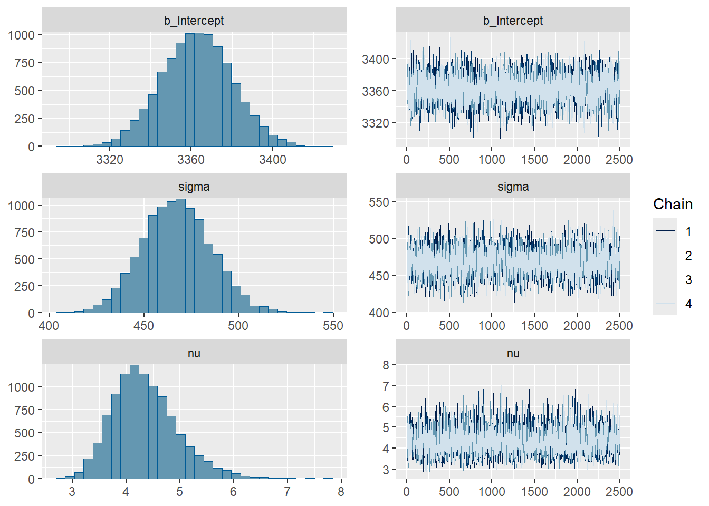
pairs(fit,
off_diag_args = list(alpha = 0.1))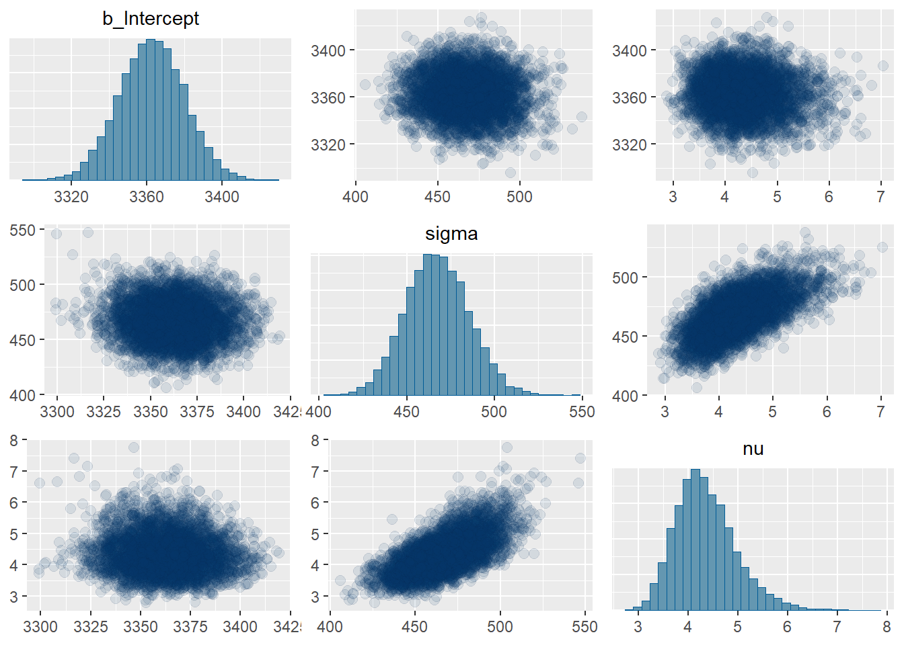
pp_check(fit, ndraw = 100) +
scale_x_continuous(limits = c(0, 8000))Warning: Removed 107 rows containing non-finite outside the scale range
(`stat_density()`).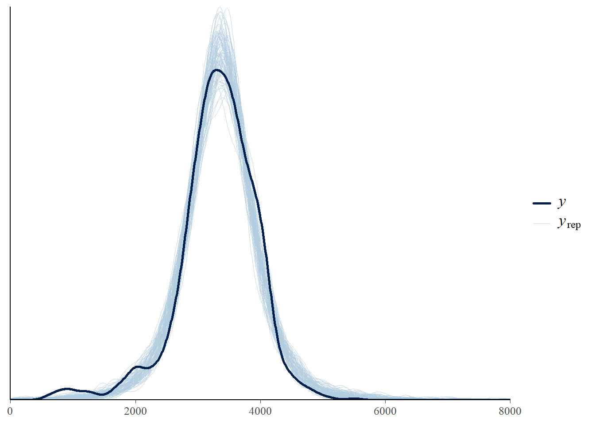
There are about 4 million live births in the U.S. per year. The data is available at the CDC website. We’re only using a random sample to cut down on computation time.↩︎